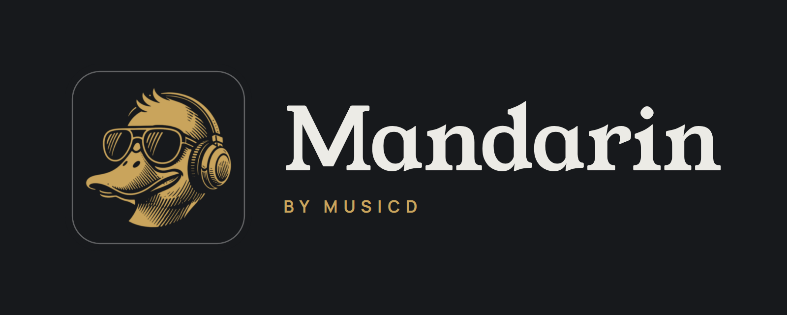

A server on a machine you own scans your music folders. Sonos rooms, the UPnP/DLNA renderers you switch on (a WiiM, a Chord Poly, a streamer, an AV receiver, a TV) and the Mandarin Android app play from it, controlled from a browser, an iPhone home screen or the Android app. No subscription or streaming account is needed.
Mandarin is a server and an Android app. The server scans your library, controls Sonos rooms, and controls UPnP/DLNA renderers (anything with AVTransport) through their own transport, gapless where the renderer supports it, with each one's sample rates read from the device. It also plays to the Android app, on the phone or through a USB DAC on its port.
Tracks go into the speaker's own Sonos queue; a UPnP renderer is handed each next track ahead of time. Each device fetches the audio from the server: the file itself when it can play it, converted to what it takes when it can't. Features lists what Mandarin does.
Tap i on any feature for how to switch it on and use it. New marks what's new since v0.5.50.
Rows of albums under a greeting: Not played in 6 months, Listen later, Playlists, Favourites, Recently played, Smart Picks, Label of the week, Random albums, Library and Browse by genre.
The first tile under the greeting plays a random album you haven't played in 12 months; until Mandarin has 12 months of history, any album.
One album, the same on every device, chosen by the server at 00:01. Once played from any device, it's gone until the next 00:01.
TZ in the Docker command).Albums you haven't played in six months. The row stays hidden until Mandarin has six months of your listening.
Every album, sorted by name, artist, release date, date added, plays, last played or random, and narrowed by genre, decade, label, format, sample rate, bit depth or first letter.
Albums, artists and labels as you type, and Qobuz's and Tidal's catalogues beside them: an album from either opens and plays whether or not it is in your library.
Tracks, year and label, write-ups from Wikipedia and Qobuz, and Pitchfork's score where it reviewed the album. Step to the previous or next album of the row you came from.
Correct an album's title, artist or year and choose its cover. Edits are kept in the server's database; your music files are not changed.
Any number of folders the server can see, added and removed in the app. Changes show by themselves where the file system reports them, otherwise at the next scan.
SCAN_INTERVAL_HOURS); ☰ → Rescan library runs one now, then brings Qobuz and Tidal up to date, in that order, where you are signed in with the import on.Each folder is one album. Disc folders inside it, such as Disc 1 or CD2, make one album shown disc by disc, with a two-disc symbol on its cover.
A file with no tags takes its artist, album, year, title and track number from its folder and file names. Nothing is written to your files.
All of each file's tags are read into the server's database, including MusicBrainz IDs, barcode, catalogue number, ISRC and ReplayGain, and used to identify albums.
Names albums from their files' identifiers first, then from MusicBrainz by tracks and lengths, with Apple's iTunes catalogue as a second source. Measures ReplayGain for files without it.
An optional download of every MusicBrainz release with a barcode, about 2 GB on disk. Albums with a barcode are matched from it, also while musicbrainz.org is down.
Cover, track, transport, volume, the queue and history, and a badge saying what the device is being sent. An optional waveform seek bar is drawn from the audio.
Pick another room, renderer or phone while music plays and it moves there: the queue goes with it, from the same track and second.
When a device's queue is running out, a random album you haven't played in 60 days goes on the end. Switched on per device.
Play, queue, play next, shuffle, repeat and volume for each Sonos room, and grouping and ungrouping rooms. Sonos plays up to 24-bit / 48 kHz; Mandarin converts anything above.
SONOS_HOSTS if not). Pick one with the speaker button; Group zones… in the same list groups them.WiiM, Chord Poly, streamers, AV receivers and TVs on your network, played like a Sonos room. Tracks join gaplessly on a renderer that supports it.
A USB DAC, speakers or HDMI on the computer Mandarin runs on, played like a Sonos room. Tracks at the same rate join with nothing between them.
--device /dev/snd and --privileged. On a Mac, set its rate in Audio MIDI Setup. Details under Sound devices on the server.Every room, renderer and phone with the rates, depths and formats it takes, your own name for it, and a switch. Renderers play Original or upsampled ×2, ×4 or Max.
A renderer that says it takes DSD files is sent the DSF or DFF itself; others get PCM. A USB DAC on the phone gets DSD natively or as DoP.
ReplayGain per device: Off, Track, Album or Auto, a target from −14 to −25 LUFS, and a level for tracks with no loudness information.
A parametric EQ of up to ten bands per renderer or phone, its curve drawn as you edit, plus headphone profiles from AutoEq or a pasted ParametricEQ.txt.
Five albums a day from your own library, by artists Deezer lists as related to the ones you've played, topped up from your least-played albums.
Pitchfork's latest album reviews and Best New Music, read in the app, with Play on any album you own.
Labels from your files' tags or a folder level: a Labels screen, logos from Discogs and FanArt.tv, lookups for albums without a label, and merging of duplicate names.
With Record labels on, one label from your library on Home all week, with its albums. A new one each Monday.
A heart on every album. Hearted albums gather on a Home row.
Albums put aside to play another time, on a Home row and a screen of their own. Each comes off by itself once every track has been played.
Playlists you make, and Dynamic Playlists that follow a saved Library view. A playlist can be shared as text and imported, matched against the other library's tracks.
The album as a picture, with links to hear it and read about it on the services you choose, and three related artists suggested beside it.
A full-screen now playing page for a TV or tablet.
http://<server-ip>:3500/display on the screen. Its options are in Settings → Wall Display.The same interface, plus lock-screen and notification controls, volume keys, a widget, a Quick Settings tile, a share sheet, Android Auto, and updates of its own.
The phone is a player of its own: speaker, headphones or Bluetooth, with queue, history and radio. At home, your other devices can play to it while the app runs.
The app's own USB Audio driver plays to a DAC on the phone's port at the file's rate and depth, without Android's mixer; DSD natively or as DoP.
Albums kept on the phone as the original files or Opus 256, played without the server. Smart Picks, the Album of the day and new albums can download by themselves.
A folder of music already on the phone, watched for changes, shown on Home and played like the library. The server never sees these files.
One switch: only the music on the phone shows, and the server isn't used. With no connection the app does the same by itself, and reconnects when it can.
On mobile data the app reaches the server through its own Tailscale, with no ports opened. Away, only the phone plays: Opus 256 or the original files.
Text sizes, grid layout (Auto, 3 or 2 columns, or List) and tile size, saved on each device. On a desktop, text goes up to +100%.
One username and password, kept on the server. Devices sign in with SRP, so the password itself is never sent, and every signed-in device is listed.
Restart Mandarin, or shut it down so it stops finding and controlling your speakers until you start it again. In Docker, only Restart.
docker stop musicd-server, then docker start musicd-server.Back up settings, players, collection, API keys and the whole database, at home or away: to the server, or from the Android app to a file with its settings.
Sign in with your Qobuz subscription: your favourites and purchases become albums here, and the Qobuz browser plays anything in the catalogue, streamed through the server.
Sign in with your Tidal subscription on tidal.com: your favourite albums become albums here, and the Tidal browser plays anything in the catalogue, streamed through the server.
The server updates itself from GitHub from Settings and checks every 12 hours. The Android app offers each new version when it opens.
Each track goes the way the device can take it, and the Now playing badge says what was sent. Conversion is ffmpeg with the SoX resampler and triangular dither; a converted track plays while it is still being written, the next tracks are prepared ahead, and replays come from a cache.
Within that, the file as stored. Above it, or in a format Sonos can't read, FLAC at 24/48.
Within it, the file as stored. Above it, FLAC at the highest rate the device takes in the file's family. Upsample ×2, ×4 or Max if you choose, from its page in Audio Devices.
The file as stored within 24/48, FLAC 24/48 above it. Away from home, Opus 256 by default.
The file at its own rate and depth where the DAC takes it, DSD natively or as DoP, FLAC at the DAC's highest rate otherwise.
APE, WavPack, WMA Lossless, 24-bit WAV, more than two channels: FLAC, in stereo.
On an always-on Linux machine on the same network as your speakers — a NAS, a Raspberry Pi 4/5 on a 64-bit OS, a home server. Fill in your music folders and time zone and copy the command.
--device /dev/snd (the devices handed to the
container) and --privileged (the container may open them — on most hosts it
otherwise can't). Tick the box above to add them. A container already running is re-created with
them by the same command. Macs don't use Docker: nothing to add there.
/music; with several, each becomes its own folder inside it —
/mnt/nas/Albums as /music/Albums, /mnt/usb/Vinyl as
/music/Vinyl — and the scan reads them all as one library. All are
mounted read-only. Adding or removing a folder later is the same command re-run; albums
in a folder that is gone drop out at the next scan.
/packs, writable (no :ro),
and you choose /packs under Folder in the app. Leave the line in every time you
re-run the command, or the folder isn't there for the pack.
If Docker isn't installed: dietpi-software install 162 on DietPi, or
curl -fsSL https://get.docker.com | sh on Debian, Ubuntu and Raspberry Pi OS.
No Docker needed: macOS 14 or newer, macOS 27 included, Apple silicon or Intel. The Mac stays on, on the same network as your speakers.
/bin/bash -c "$(curl -fsSL https://raw.githubusercontent.com/meltface-80/Mandarin/main/tools/mac/install.sh)"
:3500 in Safari and choose File → Add to Dock. It opens like an app, for
choosing music and playing it on your speakers.~/Mandarin/data; for away from home, install the Tailscale app from the
Mac App Store and sign in. No albums? In System Settings → Privacy & Security
→ Full Disk Access, click +, press Command-Shift-G, paste
/opt/homebrew/opt/node@22/bin/node (Intel Mac: /usr/local/opt/node@22/bin/node)
and click Open.brew install node@22 ffmpeg echo 'export PATH="$(brew --prefix)/opt/node@22/bin:$PATH"' >> ~/.zprofile source ~/.zprofile
git clone https://github.com/meltface-80/Mandarin.git ~/Mandarin cd ~/Mandarin npm ci --omit=dev
$HOME/Music with yours (an
external drive is under /Volumes/…). To get the path without typing, type
MUSIC_DIR=", drag the folder from Finder onto Terminal, then type
" npm start. Open http://localhost:3500 and create your account.cd ~/Mandarin MUSIC_DIR="$HOME/Music" npm start
$HOME/Music, then paste it.mkdir -p ~/Mandarin/data
cat > ~/Library/LaunchAgents/app.mandarin.server.plist <<PLIST
<?xml version="1.0" encoding="UTF-8"?>
<!DOCTYPE plist PUBLIC "-//Apple//DTD PLIST 1.0//EN" "http://www.apple.com/DTDs/PropertyList-1.0.dtd">
<plist version="1.0"><dict>
<key>Label</key><string>app.mandarin.server</string>
<key>ProgramArguments</key><array><string>$(which node)</string><string>$HOME/Mandarin/launcher.js</string></array>
<key>WorkingDirectory</key><string>$HOME/Mandarin</string>
<key>EnvironmentVariables</key><dict>
<key>MUSIC_DIR</key><string>$HOME/Music</string>
<key>PATH</key><string>$(brew --prefix)/bin:/usr/bin:/bin</string>
</dict>
<key>RunAtLoad</key><true/>
<key>KeepAlive</key><true/>
<key>StandardOutPath</key><string>$HOME/Mandarin/data/server.log</string>
<key>StandardErrorPath</key><string>$HOME/Mandarin/data/server.log</string>
</dict></plist>
PLIST
launchctl load ~/Library/LaunchAgents/app.mandarin.server.plist
/packs mount. With none chosen it's kept in
~/Mandarin/data.The same interface everywhere, because it comes from the server.
Open http://<server-ip>:3500 in Safari, tap Share → Add to Home
Screen. It opens full screen like an app, with the same interface as the Android app.
Enter the port and it finds the server on your Wi-Fi by itself, or type the address. On top of the interface it adds lock-screen and notification controls, volume keys, a now-playing widget, a Quick Settings tile, a share sheet, Android Auto, This phone as a room, downloads, a USB DAC driver, and Tailscale for away from home.
Download mandarin-android.apk — the newest build, published on every version. Sideload on Android 8.0 or newer; the app updates itself from then on.
Installed before v0.6.10? Those builds used a different signing key, so Android refuses the update. Uninstall once, install the download above and sign in again; downloaded albums need downloading again. Updates install in place after that.
All optional; pass any with -e NAME=value. Everything else is in the
app's Settings and kept in the data volume.
| Variable | Default | Purpose |
|---|---|---|
| PORT | 3500 | The interface, the API, and where speakers fetch audio. |
| TZ | UTC | Album of the day changes over at 00:01 and Smart Picks at local midnight. |
| SONOS_HOSTS | — | A speaker's IP, for when multicast discovery is unreliable. One is enough. |
| UPNP_HOSTS | — | UPnP/DLNA renderers to ask by address (an IP or a description URL), for when multicast discovery misses them. |
| IDENTIFY | on | 0 leaves the album identification scan out entirely. |
| ITUNES_COUNTRY | US | The Apple store the identification scan's iTunes lookups use (GB, DE…). |
| SERVER_IP | auto | The address speakers fetch audio from, on hosts with several interfaces. |
| INCLUDE_ZONES | — | Offer only these rooms, e.g. Kitchen,Study. |
| EXCLUDE_ZONES | — | Offer every room except these. |
| SCAN_INTERVAL_HOURS | 6 | How often the music folders are re-checked in full. Changes are noticed as they happen where the file system reports them. |
| TRANSCODE_CACHE_GB | 4 | Disk kept for converted hi-res tracks. |
| TRANSCODE_CONCURRENCY | 2 | Tracks converted at once. |
| DEBUG | — | Log every API call. |
http://<server-ip>:3500/api/health answers without signing in;
/api/status (signed in) says what the server can see. Forgot the password?
docker exec musicd-server node reset-password.js, then create the account again.
Check the container is on host networking and on the same subnet as the speakers, then
look at sonos.error in /api/status. Setting
SONOS_HOSTS to one speaker's IP skips discovery.
The speakers can't reach the server. On a machine with several network interfaces set
SERVER_IP to its LAN address, and check nothing blocks the port.
/api/status shows music_dir and index_count. Check
the -v …:/music:ro mount and that the folder is readable.
/api/health must say "ffmpeg": true. The Docker image includes it;
a hand-run server needs ffmpeg on the PATH.